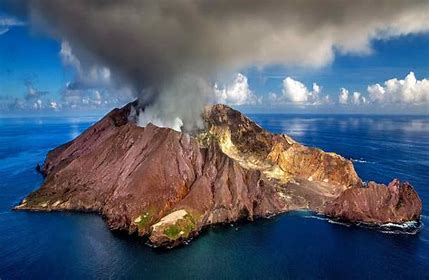

大西洋に浮かぶ島々でイギリス領である。
アセンション島は熱帯の湿潤な気候。セレントヘレナ島は穏やかな気候であり、トリスタンダークニャ島はより冷涼な気候である
これらの島々はいずれも大西洋中央海嶺が海上に達したものであり、火山島である。ただし記録上火山活動が記録されているのはトリスタンダークニャ島のみである。
また島を支えている産業としてロブスター漁業が有名である。
一番近くの大陸からは約２５００㎞離れており「世界で最も孤立した島」といてギネスブックに掲載されている。
そのため電話、インターネットは普及しているもののその通信速度は非常に遅く、動画の視聴はほぼ不可能。
これらの島々はいずれも大航海時代の１６世紀初頭にポルトガル人によって発見された。帆船航海の時代、大西洋中央部に位置するこれらの島々は物資の補給地点として重要な役割を果たしていた。
またセレントヘレナはナポレオン１世が幽閉されていたとして知られている
英国の外務・英連邦省は２０１６年9月15日、英国の海外領土として保有する太平洋及び大西洋の島々の領海及び排他的経済水域（EEZ）において、海洋生態系を保護するため海洋保護区（MPAs）に指定したことを発表した。今回指定の対象となった島は、アフリカ沖大西洋に位置するセントヘレナ島の海域（444,916km²）と、太平洋に位置するピトケアン諸島の海域（840,000km²）。セントヘレナ島の海域では資源採掘が禁止され、ピトケアン諸島の海域では資源採掘の他、地元住民による生活漁業を除く商業漁業が全面的に禁止される。
さらに同省は、2019年までに同じくアフリカ沖大西洋に位置するアセンション島の海域（445,390km²）、2020年までに同地域のトリスタンダクーニャ諸島の海域（750,510km²）も海洋保護区に指定することを発表した。アセンション島の半分の海域では地元住民による生活漁業を除く商業漁業が全面的に禁止される。またアセンション島の全海域とトリスタンダクーニャ諸島の海域では資源採掘も禁止される。（sustainablejapanより引用）